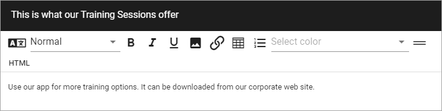
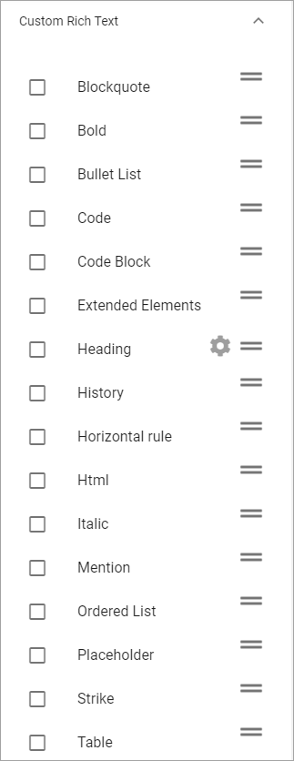
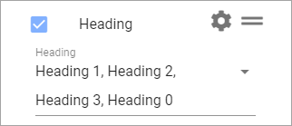
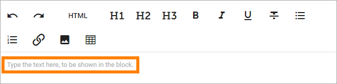
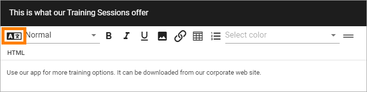
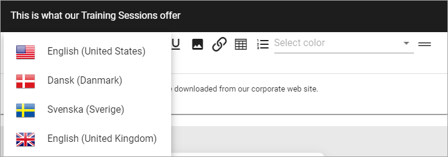

Text¶
Use this block to add text anywhere on a page. The text block can be edited by any page editor using the Write mode.
When adding text to the block some basic formatting is available. Here’s an example with the formatting options for Rich Text:
Point at an icon and a Tool Tip will show what the option is for.
Available options for Rich Text is set up in Omnia Admin, see the heading “RTF Editor” on this page: Tenant Settings
Note that HTML editing is done in a separate window so you can work with HTML if that is something you want.
Settings¶
The following settings are available for the block:

- Title: If a title should be shown for the block, add it in this field. If no variation exists for the page, it looks like in the image above and you can set the title in the languages active in the tenant. If variations exists, only one title can be set. In that case, titles in other languages are set in the variations.
- Property to store data: Select type of text to be used in this block; Title, Page Content or Page Summary. When one block on the page has data connected to a Property, that data can be reused in all blocks that uses the same Property. Page scoped. Not mandatory.
- Mode: Select mode for the text; Limited Rich Text, Rich Text or Custom Rich Text.
The following options is available for Custom Rich Text:
Note! Not all options are shown in the image.
Select the format options that should be available for editors. You can change the order for the options (left to right) by grabbing the icon to the far right and drag them to the desired position.
Note the cog wheel by “Heading”. When you select Heading you can choose which one of the formats to use, for example:
- Default Text Color: You can select default text color here. Authors can change that using the format options (regarding Custom Rich Text - if you select that format option to be available, that is).
- Help text: Here you can add a help text for the editor, for example to make it clear what kind of content should be added to the block. The help text is shown when no content is added, and when the block is edited. The help text is never shown to users as it’s not shown for a published version of the page.
Here’s an example of help text:
- Padding: You can set some padding around the text if needed.
Machine translation¶
Machine translation can be available. If it is, authors use this icon:
Click the icon and select language.
For a language to be available for machine translation, it has to be setup in Omnia Admin. See the heading “Languages” on this page for more information: Tenant Settings
Note! If you use Custom Rich Text, you can choose to make Machine Translation available, or not, for authors, by selecting or deselecting “Text Translation”.
Layout and Advanced¶
The tabs Layout and Advanced contain general settings, see: General Block Settings